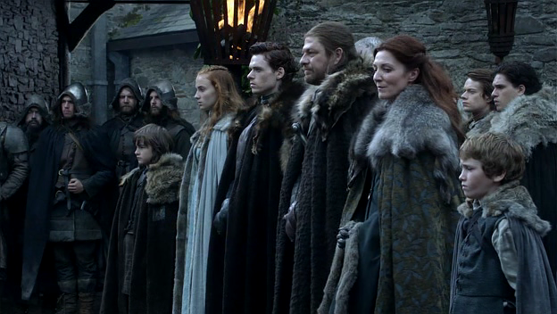

Maison Arryn
Famille Arryn
"Je n’ai jamais aimé qu’une seule femme dans ma vie... ta sœur."
Lisa Arryn
Histoire de la famille
L'histoire de la maison Arryn peut être considérée comme l’une des plus anciennes et des plus pures. Les membres de sa lignée furent rois de la montagne et du Val pendant plusieurs millénaires. Ils demeurent aux Eyrié, une imprenable citadelle perchée dans le flanc de la montagne. C’est à ce titre que les membres de la maison Arryn sont considérés comme les défenseurs du Val et les gouverneurs de l’Est. En Hiver, ils se déplacent en un lieu connu sous le nom de Portes de la Lune. Cette forteresse sert de passage vers les Eyrié et se transforme en demeure hivernale dont le gouverneur est Lord Nestor Royce. Durant la rébellion de Blackfyre, la maison Arryn est restée fidèle au Roi Daeron II mais c’est lors de la bataille du champ d’herbe rouge que Lord Arryn Van fut tué par Daemon Blackfyre. Suite à cela, la famille Arryn a vécu bon nombre de calamités, notamment en ce qui concerne les naissances de mort-nés. Malgré cela, la maison Arryn a maintenu sa lignée et elle est restée fidèle à la royauté. Le statut de la maison envers le royaume ainsi que la situation géographique de ses demeures portent la réputation de la maison suzeraine du Val.
Photos de la Famille
